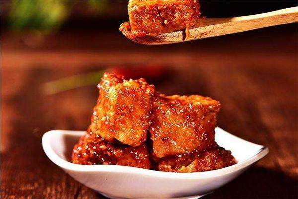
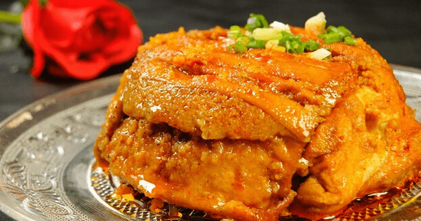
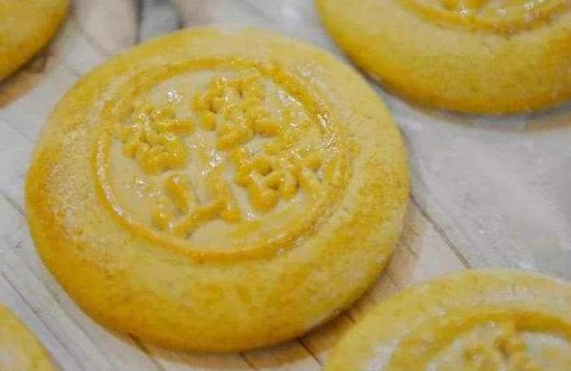
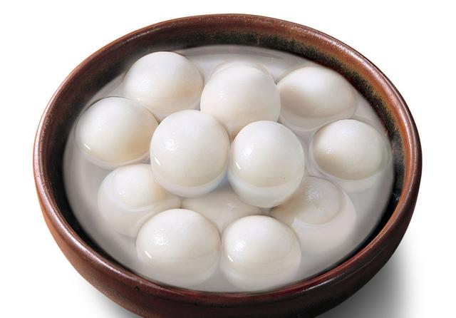
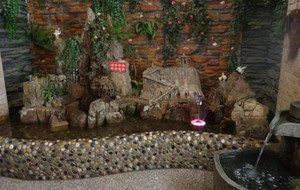
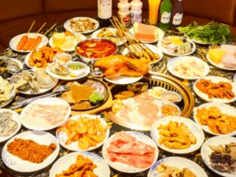
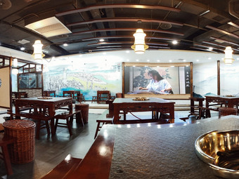
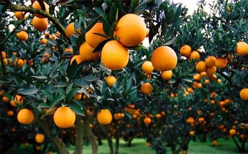

中国>河南>洛阳>洛阳美食>洛阳水席
忠州豆腐乳
概述
忠州豆腐乳，系重庆市忠县的特产，是中国国家地理标志产品，又名忠县豆腐乳，始于唐代，盛于清朝，千余年来一直旺盛不衰，是地方风味名菜，属于重庆菜。以质纯细腻、清香味美、舒适可口、余味绵长著称，在国内独具一格，其营养丰富，能健脾开胃，密封久存不腐，其味越佳。
推荐餐厅
忠县美食排行榜

忠州豆腐乳
5家推荐餐厅

石宝蒸豆腐
8家推荐餐厅

春凤饼
2家推荐餐厅

汤圆
4家推荐餐厅
柑橘
2家推荐餐厅

江中渔翁
人均： ¥40
地址： 巴王之路10号丽都花园c栋2楼
介绍： 这家店在忠县相当出名，是一家做了十多年的老店。且它家有许多菜还获过很多包括国家国际级别的美食大奖哦！！！我们吃的就是它家的特色菜——豆腐鱼！
卤校长老火锅
人均： ¥50
地址： 森林公安局西南
介绍： 藏于深巷中的民间老店

海盗船海鲜牛排烤肉自助
人均： ¥68
地址： 忠县购物公园
介绍： 行云流水般的菜肴，真的与众不同。

桧两江火锅
人均： ¥68
地址： 忠县购物公园a馆l3层
介绍： 火锅何处去？遥指桧两江

忠州烤鱼
人均： ¥38
地址： 果园路15号益华广场
介绍： 忠县特色烤鱼，美味
驴友点评

忠县地处重庆中部、三峡库区腹心，种植柑橘历史悠久、技术先进，是全市柑橘产业的核心区和示范区，具有明显的比较优势。忠县地处暖湿亚热带东南季风区，属亚热带东南季风区山地气候。温热寒凉，四季分明，雨量充沛，日照充足，特别适宜柑橘的栽培，所产柑橘颜色鲜艳，果形美观，汁多化渣。
人均： ¥24